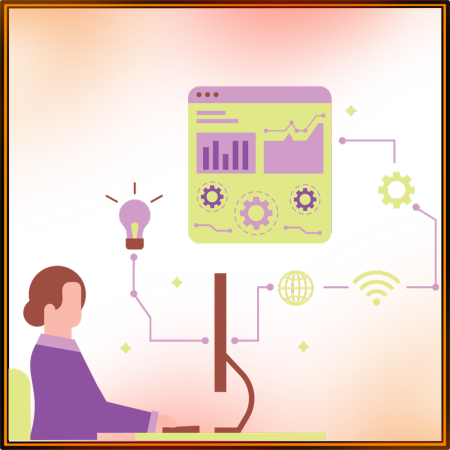

CAPÍTULO 4
HOME OFFICE E A TECNOLOGIA DAS COISAS
Por Guilherme Donella
Ouvir o conteúdo da página.
A tecnologia é sim uma benção enviada para nós, responsável por deixar nossas vidas mais fáceis e abis e com o principal objetivo de nos dar mais tempo livre com nossos lazeres pessoais, exemplo disso são máquinas de lavar que já lavam e secam, assistentes eletrônicas que já acendem e apagam nossas luzes, ligam e desligam qualquer dispositivo conectado a seu wifi, e fechaduras inteligentes que destrancam com leitor biométrico e leitores digitais.
Nós estamos cada dia mais dependentes das nossas tecnologias, dia após dia saem coisas mais novas, mais inteligentes, mais capacitadas a deixar nossa bunda na cadeira e evitar que fazemos o mínimo esforço. Mas já parou para pensar a real implicação disso? A real importância e o real peso de deixar uma maquinar controlar quem entra na sua casa? Tudo hoje me dia pode ser conectado e junto para ser mais automatizado, e meus amigos a perspectiva do futuro é brilhante e alarmante.
Essas coisas, esse novo jeito de viver, se chama a TECNOLOGIA DAS COISAS. Seu maior representante hoje em dia e exemplar de mais peso, são as assistentes eletrônicas, como Alexa, Siri, Google assistente, dentre outros vários, e seus principal objetivo é deixar nossa vida mais fácil. Assim sendo nós renunciamos ao nosso controle absoluto das coisas e deixamos sermos ajudados e cuidados, em prol da nossa satisfação absoluta e dominação dos nossos quereres, na era da tecnologia das coisas, nós viramos o produto.
Para te provar esse ponto, te convido a viajar comigo para o ano de 2020, no seu início, antes da vida de todo o mundo moderno mudar para sempre, com a pandemia novos conceitos e ideias para a logística diária foram inventadas e produzidas visando contornar o isolamento social, assim nesse contexto de incerteza, sem perspectiva de futuro e talvez até esperanças, um conceito já existente porem pouco utilizado veio a tona se mostrou ser a melhor saída que o mundo moderno trabalhista e produtor encontrou, o HOME OFFICE.